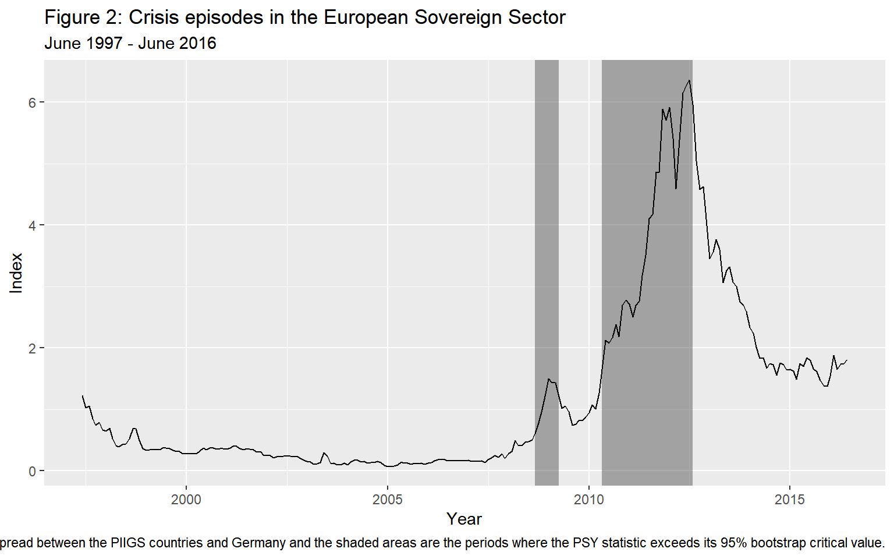

Real-Time Monitoring of Crisis: The European Sovereign Sector
Peter C. B. Phillips
Yale Universitypeter.phillips@yale.edu
Shuping Shi
Macquarie Universityshuping.shi@mq.edu.au
Itamar Caspi
Bank of Israel and Bar-Illan Universitycaspi.itamar@gmail.com
October, 2018
Source:vignettes/illustrationBONDS.Rmd
illustrationBONDS.RmdAbstract
In this tutorial we illustrate the effectiveness of the PSY procedure in detecting crisis with an applications to the European Sovereign Sector using R and the psymonitor package.Setup
Before beginning the tutorial, make sure that you have all the necessary packages. Try running the cell below and, if any issues arise, follow the instructions within.
knitr::opts_chunk$set(echo = TRUE, warning = FALSE,
message = FALSE, comment = NA)
# CRAN Packages
# -------------
# If any of these packages are not installed, write
# install.packages("<name of package>")
# e.g., install.packages("MultipleBubbles")
library(psymonitor) # For testting for bubble monitoring
library(ggplot2) # To handle plots
library(knitr) # for nice looking tablesThe Data
The European sovereign debt sector experienced an extremely turbulent period over the last decade, which caused significant harm to the real economy (Acharya et al., 2018) and led to an unprecedented level of unemployment (Karafolas and Alexandrakis, 2015). The PSY detection algorithm can serve as a useful early warning mechanism for escalating credit risk, which is acknowledged as a leading indicator of financial and economic crises, and thereby enable timely policy action and effective risk management to avert more serious economic damage. To show the potential efficacy of this early warning system, we conduct a pseudo monitoring exercise of credit risk in the European sovereign sector.
Credit risk in the European sovereign sector is proxied by an index constructed as a GDP weighted 10-year government bond yield of the GIIPS (Spain, Ireland, Italy, Greece, and Portugal) countries.5 The PSY strategy is applied to the spread between the GIIPS bond yield index and the 10-year government bond yield of Germany (used as a proxy for a prevailing benchmark of economic fundamentals). The sample data runs from June 1997 to June 2016 and was downloaded from Datastream International. The GDP data are downloaded quarterly and converted to a monthly frequency by assuming a constant value within each quarter.
| date | value |
|---|---|
| 1997-06-01 | 1.2225196 |
| 1997-07-01 | 1.0259384 |
| 1997-08-01 | 1.0510309 |
| 1997-09-01 | 0.8448181 |
| 1997-10-01 | 0.7406163 |
| 1997-11-01 | 0.7833504 |
Figure 3 plots the bond yield spread over the sample period. The bond yield index experienced a rapid and substantial rise between 2008-2009. It continued to mount to historical highs from 2010 onwards and peaked in June 2012. The bond yield index has dropped since then and becomes relatively stable over the last two years. The codes for implementing the PSY procedure are identical to those for Example 1. The estimated start and end dates of the crisis episodes are displayed below.
ggplot(spread, aes(date, value)) +
geom_line() +
ggtitle("Figure 1: Credit Risk in the European Sovereign Sector") +
xlab("Year") +
ylab("Index")
Real-Time Monitoring
With a training period of 29 observations, we start the pseudo real-time monitoring exercise from October 1999 onwards. The PSY test statistics are compared with the 95% bootstrapped critical value. The empirical size is controlled over a two-year period, i.e., by taking \(Tb = 24\). The lag order is selected by BIC with a maximum lag order of 6, applied to each subsample. The PSY statistic sequence and the corresponding bootstrap critical values can be calculated as follows in R:
First, we define the series and parameters that are used as inputs for the test procedure:
y <- spread$value
obs <- length(y)
r0 <- 0.01 + 1.8/sqrt(obs)
swindow0 <- floor(r0*obs)
dim <- obs - swindow0 + 1
IC <- 2
adflag <- 6
yr <- 2
Tb <- 12*yr + swindow0 - 1
nboot <- 9Next, we run the test
bsadf <- PSY(y, swindow0, IC, adflag)
quantilesBsadf <- cvPSYwmboot(y, swindow0, IC, adflag, Tb, nboot, nCores = 2) #Note that the number of cores is arbitrarily set to 2.The identified origination and termination dates can be calculated and viewed with the following commands:
monitorDates <- spread$date[swindow0:obs]
quantile95 <- quantilesBsadf %*% matrix(1, nrow = 1, ncol = dim)
ind95 <- (bsadf > t(quantile95[2, ])) * 1
periods <- locate(ind95, monitorDates)and printed out using the disp function
crisisDates <- disp(periods, obs)
kable(crisisDates, caption = "Crisis Periods in the European Soevereign Debt Market")| start | end |
|---|---|
| 2008-03-01 | 2008-03-01 |
| 2008-09-01 | 2009-04-01 |
| 2010-05-01 | 2012-08-01 |
The shaded areas in Figure 2 are the identified periods of crisis obtained using the 95% bootstrap critical values. The first alarm signal of risk appeared in March 2008 and lasts for one month. The alarm was triggered again after the collapse of Lehman Brothers in October 2008 and turns off in March 2009. The stress indicator switched on again in May 2010 and lasted until August 2012.
The codes for generating the plot and shaded overlays in the figure are as follows:
ggplot() +
geom_rect(data = crisisDates, aes(xmin = start, xmax = end,
ymin = -Inf, ymax = Inf), alpha = 0.5) +
geom_line(data = spread, aes(date, value)) +
labs(title = "Figure 2: Crisis episodes in the European Sovereign Sector",
subtitle = "June 1997 - June 2016",
caption = "Notes: The solid line is the 10-year government bond yield spread between the PIIGS countries and Germany and the shaded areas are the periods where the PSY statistic exceeds its 95% bootstrap critical value.",
x = "Year", y = "Index") 
References
- Phillips, P. C. B., & Shi, S.(2017). Detecting financial collapse and ballooning sovereign risk. Cowles Foundation Discussion Paper No. 2110.
- Phillips, P. C. B., & Shi, S.(forthcoming). Real time monitoring of asset markets: Bubbles and crisis. In Hrishikesh D. Vinod and C.R. Rao (Eds.), Handbook of Statistics Volume 41 - Econometrics Using R.
- Phillips, P. C. B., Shi, S., & Yu, J. (2015a). Testing for multiple bubbles: Historical episodes of exuberance and collapse in the S&P 500. International Economic Review, 56(4), 1034–1078.
- Phillips, P. C. B., Shi, S., & Yu, J. (2015b). Testing for multiple bubbles: Limit Theory for Real-Time Detectors. International Economic Review, 56(4), 1079–1134.